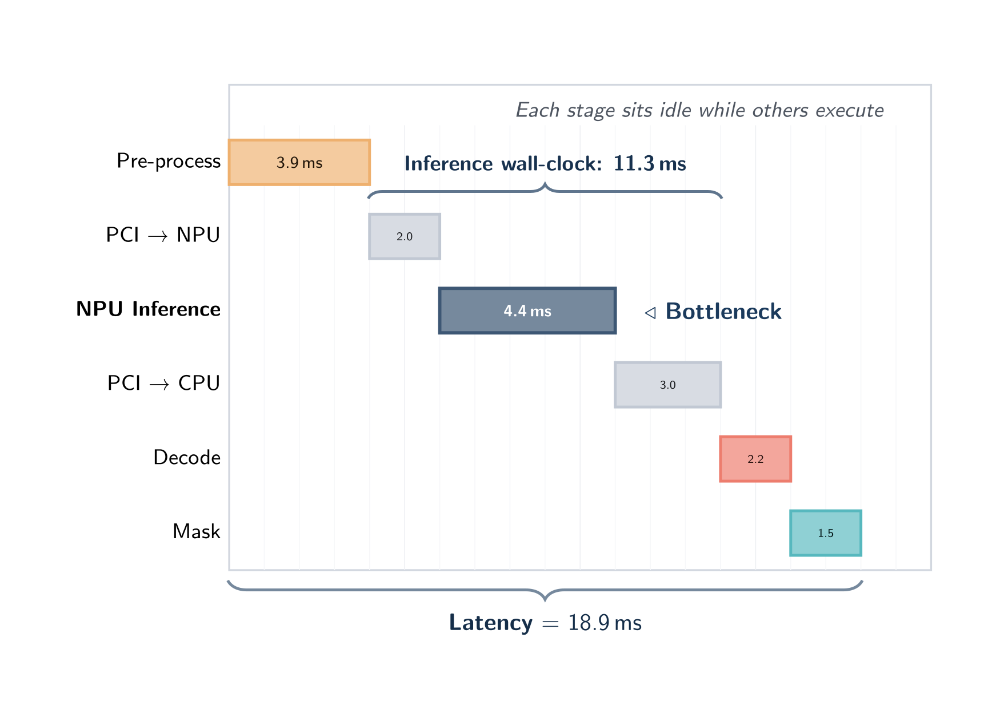
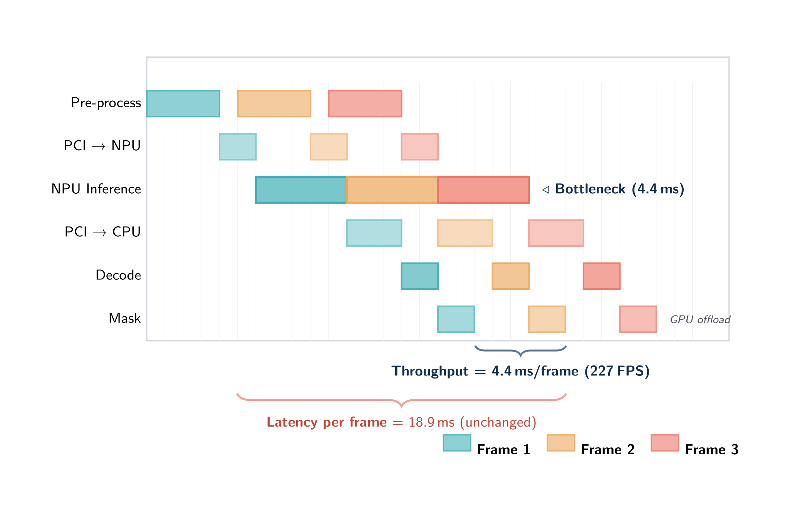
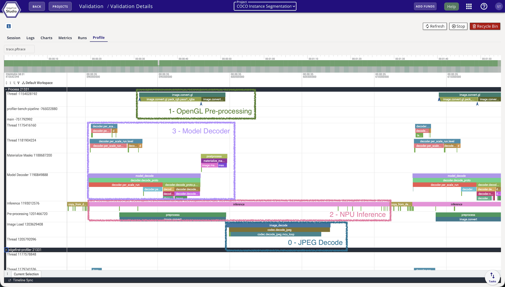

Pipelining
The EdgeFirst Profiler runs a multi-stage measurement pipeline on every frame: image capture, preprocess, inference, postprocess, and output encoding. Each stage exercises a different part of the system — CPU, host memory, bus transfers, NPU/GPU — and on a typical edge target the stages take substantially different amounts of time. Pipelining is the profiler's mechanism for overlapping those stages across frames so the slowest stage sets throughput, instead of the sum of all stage times setting it.
This page explains the conceptual model, the per-stage depth flags that control it, how each supported backend constrains them, and how to read what the profiler reports about its own pipeline.
Pipeline stages
Every frame travels through the same sequence of stages, in order:
| Stage | Hardware | What it does |
|---|---|---|
| capture | CPU (libjpeg / hardware codec) | Read the encoded image file, decode to pixels |
| preprocess | CPU / GPU + DMA | Resize, color-convert, quantize into the input tensor |
| inference | NPU / GPU / CPU | Run the model |
| postprocess | CPU | Score-threshold, box decode, NMS |
| materialize masks | CPU | Build each detection's mask from the prototype tensor and PNG-encode it (segmentation only) |
| output | CPU + disk | Write predictions to the in-memory Parquet buffer; periodically flush |
Accuracy scoring is not one of these stages by default. With --validation after — the default whenever a ground-truth source is available — the profiler evaluates the predictions once profiling has finished, reusing what was already written to disk, so scoring costs the measured run nothing. --validation during deliberately moves it onto the hot path so its cost appears in the trace. See Validation and Metrics.
Sequential execution (--inference-depth 1)
With --inference-depth 1 the profiler runs each stage on the current frame before starting any stage on the next frame. Each piece of hardware sits idle while the others work:

In this mode wall-clock latency equals the sum of all stage times and throughput equals 1 / latency. Sequential mode is the cheapest configuration in memory and the easiest to reason about — every millisecond of wall-clock time is attributable to exactly one stage.
Use sequential mode when:
- You are measuring the pure inference latency of a model without confounding pipeline-overlap effects.
- You are diagnosing which stage is the bottleneck — sequential timing is the cleanest reference.
- The platform's backend supports only depth 1 (see the table below) — the profiler clamps automatically and reports the resolved mode at run start.
Pipelined execution (Auto depth, default)
With depth ≥ 2 multiple frames are in flight through the pipeline at once: while one frame is in inference, the next frame is being preprocessed, the previous frame is being postprocessed, and so on. Every stage can be active simultaneously on different frames, and the slowest stage sets the throughput floor:

The important property: pipelining does not reduce the latency of any single frame — that critical path is unchanged. It increases throughput by converting "sum of stage times per frame" into "max of stage times per frame". For deployment profiling on real workloads the throughput number is almost always the more useful one.
The default inference depth is Auto: the profiler selects a depth from the detected backend, the platform, and — on a CPU runtime — the machine's core count, rather than using a fixed value. Higher depths give more overlap headroom (useful when stage durations are uneven) at the cost of memory, since each concurrent inference replicates the model. Passing --inference-depth N always overrides the auto value.
Inference depth on a CPU
On an accelerator the device serializes the work, and a small depth mainly hides transfer latency. On a CPU there is no separate device to overlap with: throughput comes from running several inference sessions at once, each on a slice of the cores. Choosing that slice is the whole game, and the right answer scales with the machine.
The CPU default is therefore a table indexed by host core count:
| Cores | Slots | Cores | Slots | |
|---|---|---|---|---|
| 1 | 1 | 12 | 9 | |
| 2 | 2 | 16 | 10 | |
| 4 | 4 | 24 | 11 | |
| 6 | 6 | 32 | 12 | |
| 8 | 8 | 48 | 13 | |
| 64 | 14 | |||
| 96 | 16 |
Core counts between rows interpolate; below or above the table, the nearest end applies. The 8 and 48 rows are measured — full depth sweeps of YOLOv5n over COCO's 5000 validation images — and the rest follow their trend. The table is keyed on core count alone: a 48-core host behaved the same whether it was AWS Graviton4 or AWS Intel, so processor architecture is not consulted.
The CPU cap is 16, but the slider stops at 8
--inference-depth accepts up to 16 concurrent inferences on a CPU. The depth sliders in the terminal interface's launch dialog still offer up to 8, so use the flag when you want more.
Backend auto-depth table
Targets with their own measured tuning override the core-count table. The profiler applies these at startup unless --inference-depth says otherwise:
| Backend | Auto inference depth | Notes |
|---|---|---|
| ONNX Runtime CPU | core-aware | From the core-count table above |
| ONNX Runtime CUDA (x86_64 Linux) | 4 | Also pins preprocess to 1 — a single preprocess thread avoids CPU contention with CUDA kernel dispatch |
| ONNX Runtime CoreML GPU (macOS) | 3 | Measured knee at depth 3 |
| ONNX Runtime CoreML ANE / CPU (macOS) | core-aware | No platform override; the ANE serializes device work internally, so extra slots buy only preprocess and postprocess overlap |
| TensorRT (Jetson Orin Nano) | 4 | Also pins capture and postprocess to 2 — see the note below |
| TFLite XNNPACK | core-aware | From the core-count table above |
| TFLite Neutron (i.MX 95, DMA-BUF zero-copy) | 1 | Single-bind delegate; preprocess also forced to 1 |
| TFLite Neutron (i.MX 95, CPU-staging) | 4 | Multiple independent slots |
| TFLite VxDelegate (i.MX 8M Plus VSI NPU) | 1 | Only one in-flight inference |
| Ara240 (Kinara, i.MX 95) | 8 | I/O rebind pool; NPU ceiling ≈249 FPS YOLOv8n |
| HailoRT (Hailo-8L on Raspberry Pi 5) | 4 | Measured on that pairing |
The VSI NPU on the i.MX 8M Plus serves only one inference client at a time, so on that target the inference stage runs sequentially regardless of what you request. The same is true of the Neutron delegate while DMA-BUF zero-copy is active. On both, a depth sweep will be flat.
Why the Jetson Orin Nano pins more than inference
The Orin Nano's full pipeline is CPU-contention-bound rather than decode-bound. Leaving capture and postprocess on their generic auto asks for more workers than the six-core SoC can serve, which starves the priority-boosted inference dispatch thread. Pinning capture and postprocess to 2 frees cores for preprocess and inference, measured at roughly 272 FPS on YOLOv5n at 640 over COCO's 5000 images, against about 250 FPS without those pins.
Per-stage depth flags
Every pipeline stage has an independent concurrency control. Each flag defaults to 0, meaning Auto:
| Flag | Controls | Auto resolution |
|---|---|---|
--capture-depth N |
Parallel file-load / JPEG-PNG decode workers | A measured platform value if one exists, else the core count capped at 4 |
--preprocess-depth N |
Parallel preprocess workers (GPU letterbox convert, or CPU staging) | A measured platform value if one exists, else 4 |
--inference-depth N |
Concurrent in-flight inference slots | See the tables above |
--postprocess-depth N |
Parallel model decoder (DFL + NMS) workers | A measured platform value if one exists, else the core count capped at 2 |
--mask-depth N |
Parallel Materialize Masks workers (segmentation only) | A measured platform value if one exists, else the core count capped at 2 |
Setting any flag to 0 restores Auto for that stage. Passing 1 serializes it. The resolved value for each stage is printed at run start alongside the backend name.
--mask-depth matters only for segmentation. Building each detection's mask from the prototype tensor and PNG-encoding it is the segmentation throughput gate when it runs single-threaded — frames materialize one at a time even when the accelerator already has the next result ready. A detection-only model ignores the flag entirely and runs a single pass-through worker, because there are no masks to build.
Preprocess is not clamped to one worker on the CPU-staging path
Earlier versions of this page said pre-processing was limited to a single worker when images were staged through the CPU. That was never true of the shipped behavior and is not true now: both pipeline shapes fan out, and the default is four workers. Only a single-bind delegate — the TFLite VxDelegate, or Neutron while DMA-BUF zero-copy is active — forces preprocess to one, and device batch mode does the same.
Neutron — DMA-BUF zero-copy vs CPU-staging
The Neutron delegate on i.MX 95 operates in two distinct modes depending on kernel support:
DMA-BUF zero-copy mode (kernel patch present, or NEUTRON_ENABLE_ZERO_COPY=1): a single inference slot is bound directly to device memory. The preprocess stage serializes with inference — the trace viewer shows their slices touching back-to-back rather than overlapping, so the preprocess → inference critical path behaves more like depth 1 than depth 2. Capture and postprocess still overlap freely and throughput still benefits from pipelining across those stages. Auto inference depth is 1; preprocess is forced to 1.
CPU-staging mode (kernel patch absent, or NEUTRON_ENABLE_ZERO_COPY=0): up to 4 independent inference slots run in parallel, each staging its input through system memory before dispatch. Auto inference depth is 4, delivering approximately 97 FPS on YOLOv5n at 640 on i.MX 95 Pro (single-slot baseline ≈73 FPS). The profiler detects the mode automatically and falls back cleanly if DMA-BUF is unavailable. At depth 4 or above the launch-time dialog warns that the mode is CPU-staging.
Launch-time Customize dialog
Every run started from the TUI (F4 Start, Studio Validate, local profiling) opens a launch modal before the pipeline starts. For ONNX models the dialog also selects the execution provider.
- Press Enter to launch immediately with Auto depths.
- Press c to open five sliders (Capture, Preprocess, Inference, Postprocess, Mask), each defaulting to Auto and showing what Auto will resolve to for the detected platform.
- Press s for the serialized-core preset — every core stage runs one frame at a time. This is the launch-dialog equivalent of
--serialize-core. - Press t to toggle SAHI tiled inference on or off, shown as
Tiling: on/off. - Move a slider to 1–8 to pin that stage; this is equivalent to passing the corresponding
--<stage>-depth Nflag. For a CPU inference depth above 8, use--inference-depthon the command line instead. - The dialog displays a warning banner when the platform constrains a stage to single-thread concurrency (for example, VxDelegate inference or Neutron DMA-BUF preprocess).
How pipelining appears in the trace viewer
Open the Perfetto trace for any validation session in Studio (the Profile tab on the session card). At depth ≥ 2 you will see frames overlapping across the stage tracks — the same picture as the overlap diagram above, but with real timing.

The four overlays on the trace above map directly to the pipeline stages, with each box covering a different frame in flight at the same instant:
- 0 — Capture: the CPU decoder reading the next image file off disk.
- 1 — OpenGL Pre-processing: hardware-accelerated resize / color-convert / quantize via
edgefirst-hal, writing into the input tensor. - 2 — NPU Inference: the accelerator running
invoke()on the already-preprocessed frame from the previous slot. - 3 — Model Decoder: postprocessing (box decode, NMS) of the frame whose inference just completed. On a segmentation model a further Materialize Masks track follows it.
Reading vertically at any point on the time axis shows what the profiler is doing concurrently — four frames in different stages of completion. Reading horizontally along any one track shows how that stage performs on consecutive frames.
At depth 1, all stage tracks line up sequentially per frame: the next frame's capture slice does not start until the previous frame's last stage finishes.
Multi-slot ONNX traces. When --inference-depth is greater than 1 on ONNX Runtime, the trace shows one track per inference slot (ort.run.slot0, ort.run.slot1, …) with true wall-clock positions, making real overlap between concurrent inferences directly visible.
Per-frame identity. Every pipeline stage span now carries the image_name and frame_id it processed, so clicking any span in the trace viewer immediately identifies which image produced it.
frame_e2e events. A frame_e2e event is emitted when each frame's result is ready. It carries the end-to-end work-time — the sum of that frame's own stage durations — which is the figure reported in the Session Report. Work-time is stable under varying pipeline depth; it does not balloon with queue backlog the way the raw wall-clock time from capture to result does in pipelined mode.
pipeline_config event. A single pipeline_config event at the start of the run records the full pipeline geometry: backend, execution provider, the resolved per-stage depths, and the Neutron mode when applicable.
Is it the model, or the images?
Reading and JPEG/PNG-decoding each image used to be folded into preprocess, which meant it never appeared in the timing summary and the reported bottleneck was whichever compute stage came next. On a fast accelerator that answer is usually wrong. Capture is now measured and reported as its own stage, and it is frequently the real limit: one 5000-image COCO run that reported inference as the bottleneck at 914 FPS was in fact capture-bound at 864 FPS, with preprocess itself overstated at 3.13 ms instead of 0.64 ms.
Alongside the ordinary bottleneck figure, the timing summary therefore reports what the run would do if decoding were free:
| Field | Meaning |
|---|---|
capture_bound |
Whether image load and decode is what limits this run |
compute_bottleneck_stage |
The stage that would limit throughput if capture were free |
compute_bottleneck_fps |
The rate at which it would do so |
This separates a dataset or codec limit from a model limit, and the distinction matters for deployment. A benchmark fed by JPEG files on disk can be bound by the host's decoder while the accelerator has headroom to spare; a deployed camera hands over frames already decoded, at its own frame rate. The compute ceiling is reported as a named stage rather than an inference-only number, because with a heavy postprocess it is not always inference that binds next.
These fields appear in the console summary, in metrics.yaml under timing.inline, and in the published charts.
Measured worker concurrency
The profiler does not assume its stage workers are busy — it measures them. For each stage it records how much of the run the workers actually spent occupied and how full the queue feeding that stage got, then assigns a verdict:
| Verdict | What it means |
|---|---|
| Balanced | Occupancy and queue behavior are both mid-range; the reservation looks about right |
| OverReserved | Workers mostly idle and the inbound queue mostly empty — more workers than the workload needs |
| UnderReserved | Workers mostly saturated and the queue backing up — the stage is holding back throughput |
| Serialized | Reported for the inference stage, where the device serializes work regardless of worker count, so no reservation verdict applies |
The verdicts appear as a Pipeline Worker Concurrency table in the console summary, as a timing.concurrency block in metrics.yaml, and as two published charts — a queue-depth timeline and per-stage worker occupancy. An UnderReserved verdict on a stage is the clearest signal that raising that stage's depth will help; an OverReserved one says the opposite.
Because real timing is available, throughput is derived from the run's own measured execution rather than from an assumed-linear estimate.
A common diagnostic flow:
- Run once at the platform's auto depth.
- Check
capture_boundfirst. If the run is capture-bound, tuning inference will not move the headline number — look at image sizes, the codec, and--capture-depth. - Otherwise read the worker-concurrency verdicts, and raise the depth of whichever stage came back
UnderReserved. - To confirm a diagnosis with contention-free per-stage numbers, re-run with
--serialize-coreand compare.
CLI
edgefirst-profiler validate --session-id v-XXXX --inference-depth 1
edgefirst-profiler validate --session-id v-XXXX --inference-depth 4
edgefirst-profiler validate --session-id v-XXXX --inference-depth 13 # up to 16 on a CPU
Per-stage overrides can be combined:
# Pin inference to 4 slots, let every other stage stay on Auto
edgefirst-profiler validate --session-id v-XXXX --inference-depth 4
# Fully manual geometry for reproducible benchmarking
edgefirst-profiler validate --session-id v-XXXX \
--capture-depth 1 \
--preprocess-depth 1 \
--inference-depth 1 \
--postprocess-depth 1 \
--mask-depth 1
--serialize-core is the shorthand for a clean per-stage latency run. It forces preprocess, inference, postprocess, and Materialize Masks to a single worker each, so no device serves two frames at once. Image decode stays concurrent — it sits upstream of the core pipeline, so keeping it parallel does not perturb the measurement:
edgefirst-profiler validate --session-id v-XXXX --serialize-core
Any explicit per-stage depth you pass alongside it still wins over the preset.
--inference-depth is also readable from the INFERENCE_DEPTH environment variable, for containers and job schedulers that cannot easily change a command line. The precedence, highest first, is the explicit flag, then the environment variable, then --serialize-core, then the measured default for your hardware.
The resolved per-stage depths, the backend, and the operating mode (pipelined vs sequential) are reported once at run start, and recorded in the pipeline_config trace event for the session.
Tiled inference and the pipeline
With --sahi, each decoded frame expands into several overlapping tiles instead of one letterboxed image. Every tile flows through preprocess, inference, and model decode as its own work item, through the same concurrent stage pools described above, and the per-tile detections are merged back into full-frame coordinates at the end. The stage geometry does not change — but the work per frame multiplies by the tile count, which moves the bottleneck and makes the depth choices on this page matter more, not less. See Tiled Inference (SAHI).
Measuring your own defaults
The depths above are measured, not guessed — but they were measured on some hardware with some model, on a machine running the profiler and nothing else. That is the right basis for a default and deliberately not a claim about your deployment, which may run several models against a live camera, share the SoC with other services, and answer to a latency target rather than a throughput one.
If you are running on hardware we have not measured, or alongside another workload, measure it yourself. The method is short:
- Sweep the range. Run the same model and dataset at each depth from 1 to 16, changing nothing else, and compare the reported FPS. Use the same dataset every time — a shorter one is fine for tuning, but a different one is not a comparison.
- Check the peak is not at the edge. If the best value is the largest one you tried, you have measured your range rather than your hardware. A curve that rises to the last value you tested looks exactly like a curve that peaked there.
- Check the difference is real. Run your best two or three depths three times each. If the spread between repeats of the same depth is comparable to the gap between different depths, the gap is noise — prefer the smaller depth, since every extra slot costs another copy of the model in memory. Cloud instances, shared machines, and anything thermally throttled deserve this check especially; one instance type behind the defaults above varies by nearly 10% between identical runs.
- Confirm the depth you asked for is the depth that ran. The CPU cap, a backend limit, or a single-bind delegate can all clamp the request. The published metrics record how many inference workers were actually reserved; if that does not match what you asked for, the sweep is measuring one configuration repeatedly.
Reading the result: throughput that rises then plateaus means take the smallest depth on the plateau. Throughput that rises the whole way means the range was too small. Throughput that is flat everywhere means either something is clamping the depth, or inference is not the bottleneck — check the capture and per-stage timings before tuning inference any further.
Depth changes concurrency, not arithmetic. Accuracy does not move with it; if yours does, that is a bug worth reporting rather than a trade-off to balance.
See also
- Validation and Metrics — what the profiler computes from a run and where the timing lands in
metrics.yaml. - i.MX 8M Plus — Inference depth — the VSI delegate's auto-clamp to depth 1.
- Validation from Studio — Session Report — the per-stage timing breakdown printed to stdout on completion.